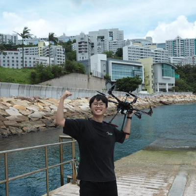
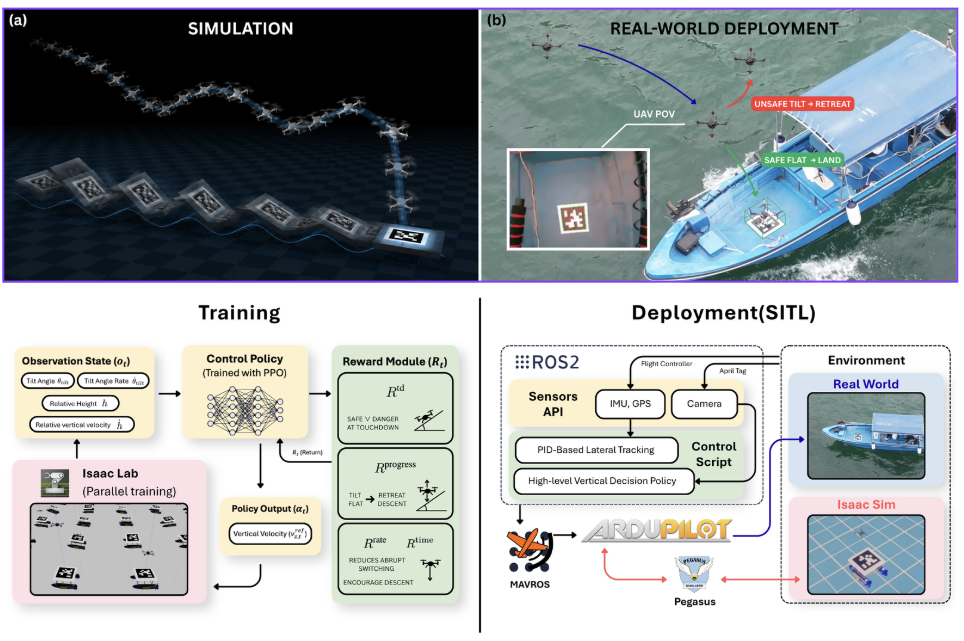
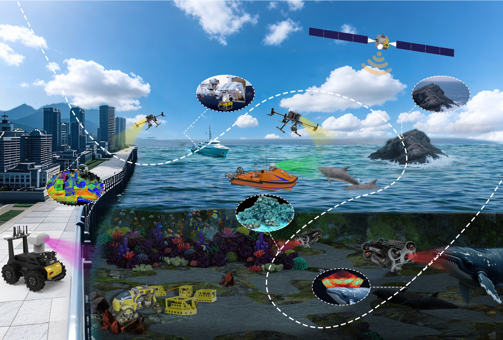

|
Jacky, Li Chun Kit 李 俊杰 Jacky Li 李俊杰 Jacky Li 李俊杰 Jacky Li
Hello World! This is Jacky Li, an undergraduate student at
The Hong Kong University of Science and Technology . I am
affiliated with the
Cheng Kar-Shun Robotics Institute and the Multi-Agent Systems
Laboratory, where I am fortunate to work closely with
Prof. Ling Shi.
香港科技大学
学部生の Jacky Li です。
現在、
Cheng Kar-Shun Robotics Institute
および Multi-Agent Systems Laboratory に所属し、
Prof. Ling Shi
のご指導のもとで研究に取り組んでいます。
我是李俊杰 Jacky Li，是
香港科技大学
的本科生，
我主要在
郑家纯机器人研究院
和多智能体系统实验室从事研究，很荣幸得到
施凌教授
的支持与指导。
我是李俊杰 Jacky Li，是
香港科技大學
的本科生，
我主要在
鄭家純機器人研究院
和多智能體系統實驗室從事研究，很榮幸得到
施凌教授
的支持與指導。
|
 |
{kind=link}
Recent News最新情報最新消息最新消息 |
|
Research研究研究研究 |
|
 |
|
|
 |
|

|
|
Selected Honors and Awards主な受賞歴部分荣誉与奖项部分榮譽與獎項 |
|
Connectお問い合わせ联系我聯絡我 |
|
If you are interested in my research projects, startup work, or visiting the Cheng Kar-Shun Robotics Institute at HKUST, feel free to reach out. I am always open to research collaborations and research internship opportunities. 研究テーマ、スタートアップ活動、または HKUST の Cheng Kar-Shun Robotics Institute へのご訪問にご関心をお持ちでしたら、 ぜひご連絡ください。 共同研究や研究インターンシップのご相談を歓迎しております。 如果你对我的研究项目、创业工作感兴趣，或有计划来访香港科技大学 郑家纯机器人研究院，欢迎随时 联系我。 我非常欢迎研究合作与科研实习机会。 如果你對我的研究項目、創業工作感興趣，或有計劃來訪香港科技大學 鄭家純機器人研究院，歡迎隨時 聯絡我。 我非常歡迎研究合作與科研實習機會。 |
|
Website template stolen from Jon Barron, with gratitude 本ウェブサイトは Jon Barron 氏のテンプレートを参考に作成しました。深く感謝申し上げます。 网站模板来自 Jon Barron，在此致谢。 網站模板來自 Jon Barron，在此致謝。 |